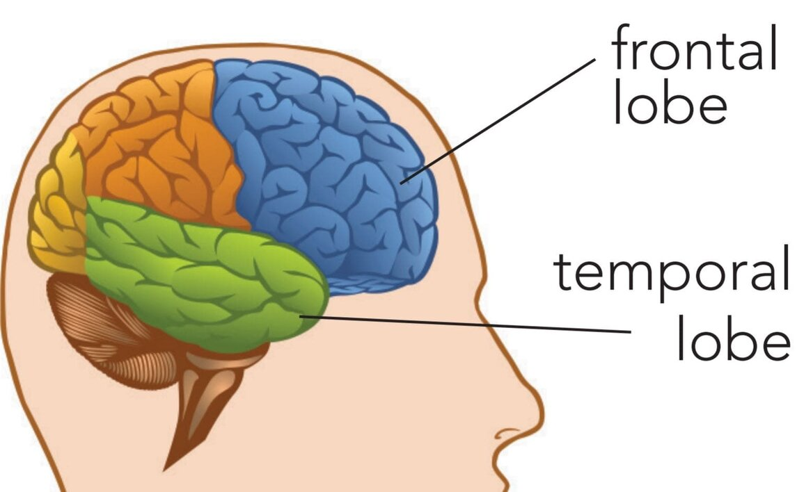

Dementia is an umbrella term used to describe a person’s decline in memory, thinking, or reasoning. There are many different types, from Alzheimer’s to Vascular Dementia.
Most common types of dementia
Figure 1: Most common types of dementia [16]
Symptoms
Dementia symptoms may include problems with [1]:
Memory loss
Thinking speed
Mental sharpness and quickness
Language, such as using words incorrectly, or trouble speaking understanding
Judgement
Mood
Movement
Difficulties doing daily activities
Types of dementia
While your likelihood to develop dementia increases drastically from 65 years onwards, some people can develop dementia under 65, as young as 30. This is classified as younger onset dementia[2], however, it is quite rare, only representing 1-5% of all dementia cases.
Dementia can affect people mentally, while it directly affects their memory and makes them forgetful, it can also make them frustrated as they begin to lose their independence and start to rely more on others because they can’t do things themselves.
“Dementia has a physical, psychological, social, and economic impact, not only on people with dementia but also on their carers, families and society at large”[3]
There are over 400 different types of dementia [4], the most common types are as follows:
Figure 2: Alzheimer's diseased brain compared to a normal one [17]
Alzheimer’s is the most common and therefore the most researched and understood type of dementia. Although there is no one absolute way Alzheimer’s is developed, it is thought to be caused by the formation and build-up of amyloid and tau proteins in the brain [5]. This build-up of proteins causes lethal injury to the nerve cells, resulting in the death of the cells and thus cause the brain to shrink.
The hippocampus (The part of the brain involved in forming new memories, learning and emotions) is typically the first to be affected and due to this, new memories can’t be formed and short term memory is affected. Then long term memory, with more current memories being forgotten first progressing to the eventual loss of older memories.
As Alzheimer’s continues to develop, the person may remember emotions associated with certain memories but may not remember the exact details. As time goes by, more nerve cells begin to die and there becomes a gradual decline in cognitive function.
Performing cognitive tasks such as learning new things and connecting to others socially can help prevent Alzheimer’s later in life, as well as having a healthy diet and lifestyle [6].
Timeshift
As stated previously, in Alzheimer’s, more current memories are lost first, progressively losing memories in reverse chronological order. This can lead to a phenomenon experienced by the person called “Time Shift”.
This person feels as though key milestones in their past are the present and that may result in them thinking they are in a different age, place, or still think people they knew who have passed are still alive. Time shifts can manifest in many ways, ranging from thinking they have to drop their kids to school to thinking they still have to go to work even if they retired years ago.
Due to these memories having strong connections in the brain, negating their existence can trigger a strong emotional response, so it would be best to ease them into the truth as to not cause an emotional outburst.
Vascular dementia is caused by difficulties with the brain’s blood supply to its nerve cells, causing a reduction or a complete halt in oxygen and nutrients to said nerve cells. This reduced blood flow can result in damage to the nerves and lead to nerve cell death. This can be caused by a blockage or leak in the network of blood vessels in the brain called a stroke. This stroke can cause considerable damage to the brain and can therefore affect many parts of the brain from memory to language (they have difficulty remembering or speaking). Vascular dementia can be caused by either a large enough stroke (Post-stroke dementia ) or a series of smaller strokes (Multi-infarct dementia).
Another way of developing vascular dementia is through small vessel disease (subcortical vascular dementia), where the blood vessels in the brain begin to constrict and narrow. This type of development can lead to a more gradual loss of abilities such as the slowing of cognitive functions and problem - solving [7].
Staying active and eating healthy in conjunction with treating high blood pressure and cholesterol can help slow down the progression of vascular dementia [8].

Figure 3: The positions of the frontal and temporal lobes of the brain [18]
Frontotemporal dementia is the name for various conditions where cells in the frontal and temporal lobes of the brain are damaged [9]. It is a type of dementia that is more likely to affect younger individuals than older. It is thought to occur when abnormal forms of proteins build-up, similar to Alzheimer’s, however, unlike Alzheimer’s and most dementia, it is thought to be hereditary and have a strong genetic link.
The frontotemporal section of the brain controls language, behaviour and emotional responses. The most common type of damage is damage to the frontal lobe, leading to changes in behaviour and personality, which may lead to a loss of their inhibitions. Damage to the temporal lobe can result in struggling to grasp their language [10].
Frontotemporal dementia is challenging as the person with it may think that their behaviour is not unusual or inappropriate.
People with frontotemporal dementia may require a caregiver as their ability to de independent declines. Participating in hobbies, and looking after their health can help them reduce their stress and minimise emotion outbursts that may appear as a result of this type of dementia [19].
Firstly, Lewy - bodies are clusters of proteins that develop in nerve cells in the brain, preventing proper intercellular communication by interrupting chemical signalling between them, leading to nerve cell death. It is not understood fully why Lewy-body dementia can give rise to its associated dementia, however, it can affect any and all parts of the brain which can result in many different symptoms such as physical degradation. It can also lead to the same symptoms as Alzheimer’s, and as it continues to develop, it can cause visual hallucinations too [11].
Supporting someone with DLB can consist of a variety of methods. Re-assuring them that the hallucinations are not real and that you are there to aid and support them through it, and using visual/auditory aids to assist in their memorisation as it begins to degrade.
Mild cognitive impairment (MCI) is halfway between the standard decline in cognitive function due to age and diagnosed dementia, it is not significant enough to intervene with daily activities, however, it still affects the person’s mental capabilities [12]. There are 2 types of MCI:
Amnestic MCI: Where the dominant symptom is memory loss
Nonamnestic MCI: Where the dominant symptom is not memory loss but is still associated with cognitive decline (e.g. physical, visual)
Treatment
There is no cure for most types of dementia, however, there is medical care to temporarily improve or slow down the progression of it:
Acetylcholinesterase inhibitors (AChEIs) are used to slow down the progression of Alzheimer’s by inhibiting the degradation of acetylcholine, a neurotransmitter, leading to better intercellular communication [13].
Memantine is used in conjunction with AChEIs for treating dementia, as it regulates glutamate, another neurotransmitter, which is used in cognitive functions such as memory [14].
Support
If you or someone you know might think they have dementia then you can find out your next steps here:
Other people’s experiences of living with dementia
Starting with Adele’s story:
Adeles partner was diagnosed with a behavioural variant of frontotemporal dementia (bvFTD) in May 2013, at the young age of 45, an example of young-onset dementia. Adele and her partner lived together for years but he sadly passed in 2018, however, Adele continues to tell her story in the form of her blog Alootes. All about their life together and her experiences so far.
How you can support people with dementia?
Check out the Alzheimer’s Society - an incredible charity with an aim to help sufferers of dementia and their families cope
You can also donate to the Alzheimer’s society here
Is Dementia the end?
In most cases, dementia is not the end of the world. Many people with dementia can still lead eventful lives, with both social and physical activities. While in extreme cases, adjustments must be made to accommodate this new development, in mild cases, no such changes are necessary.
Changes are likely to occur as the condition develops however, that should not stop anyone from enjoying their life, enjoying with family. Visiting old friends, trying new things, and having a fun time is still possible with dementia.
“We want to reassure people that life doesn’t end when dementia begins.”
Conclusion
During my time at Springfield hospital, I started reading “Understanding Behaviour in Dementia that Challenges: A Guide to Assessment and Treatment” to get a better understanding of the patients I was visiting and I learnt a lot about dementia and common misconceptions people have of it.
This page is just a concise post on dementia, giving the key points on the types of dementia and giving a head start for people, who can then research further if they want.
I want to help educate those people and get them to see the reality of dementia and its realness. Dementia affects 50 million people Worldwide, and there are nearly 10 million new cases every year[15].
During my student internship, I personally saw how psychiatrists and psychologists (yes they’re different) work together with a whole multidisciplinary team consisting of nurses and other health care practitioners to provide the best, most holistic care they can provide for their patients. It inspired me to write this post, to do my part in helping people become more health literate so they can work in collaberation with their healthcare to give themselves the best quality of life they can get.
[1] NHS Choices (2020). About dementia - Dementia guide. [online] Available at: https://www.nhs.uk/conditions/dementia/about/ [Accessed 2 Nov. 2020].
[2] YoungDementia UK. (2013). Young onset dementia facts & figures. [online] Available at: https://www.youngdementiauk.org/young-onset-dementia-facts-figures [Accessed 1 Nov. 2020].
[3] World Health Organization: WHO (2020). Dementia. [online] Who.int. Available at: https://www.who.int/news-room/fact-sheets/detail/dementia [Accessed 1 Nov. 2020].
[4] Types of dementia (2020). Types of dementia. [online] Dementia. Available here [Accessed 1 Nov. 2020].
[5] Hardy, J.A. and Higgins, G.A., 1992. Alzheimer’s disease: the amyloid cascade hypothesis. Science, 256(5054), pp.184-186. [Accessed 2 Nov. 2020]
[6] Harvard Health Publishing (2019). What can you do to avoid Alzheimer’s disease? - Harvard Health. [online] Harvard Health. Available here [Accessed 1 Nov. 2020].
[7] T O’Brien, J. and Thomas, A., 2015. Vascular dementia. The Lancet, 386(10004), pp.1698-1706. [Accessed 2 Nov. 2020]
[9] Alzheimer’s Disease and Dementia. (2015). Frontotemporal Dementia. [online] Available here. [Accessed 1 Nov. 2020].
[10] Snowden, J.S., Neary, D. and Mann, D.M., 2002. Frontotemporal dementia. The British journal of psychiatry, 180(2), pp.140-143. [Accessed 2 Nov. 2020]
[11] Spillantini, M.G., Crowther, R.A., Jakes, R., Hasegawa, M. and Goedert, M., 1998. α-Synuclein in filamentous inclusions of Lewy bodies from Parkinson’s disease and dementia with Lewy bodies. Proceedings of the National Academy of Sciences, 95(11), pp.6469-6473. [Accessed 2 Nov. 2020]
[13] English, Brett A.; Webster, Andrew A. (2012). “Acetylcholinesterase and its Inhibitors”. Primer on the Autonomic Nervous System. Elsevier. pp. 631–633. [Accessed 2 Nov. 2020]
[15] World Health Organization: WHO (2020). Dementia. [online] Who.int. Available here [Accessed 2 Nov. 2020].
[16] Uq.edu.au. (2017). Types of dementia. [online] Available at: https://qbi.uq.edu.au/brain/dementia/types-dementia [Accessed 2 Nov. 2020].
[17] Wikimedia.org. (2011). File:Alzheimer’s disease brain comparison.jpg - Wikimedia Commons. [online] Available here [Accessed 2 Nov. 2020].
[18] https://www.facebook.com/NIHAging (2019). Frontotemporal lobar degeneration consortium combines and continues research efforts. [online] National Institute on Aging. Available at: https://www.nia.nih.gov/news/frontotemporal-lobar-degeneration-consortium-combines-and-continues-research-efforts [Accessed 2 Nov. 2020].
[19] Mayoclinic.org. (2019). Frontotemporal dementia - Diagnosis and treatment - Mayo Clinic. [online] Available here. [Accessed 3 Nov. 2020].